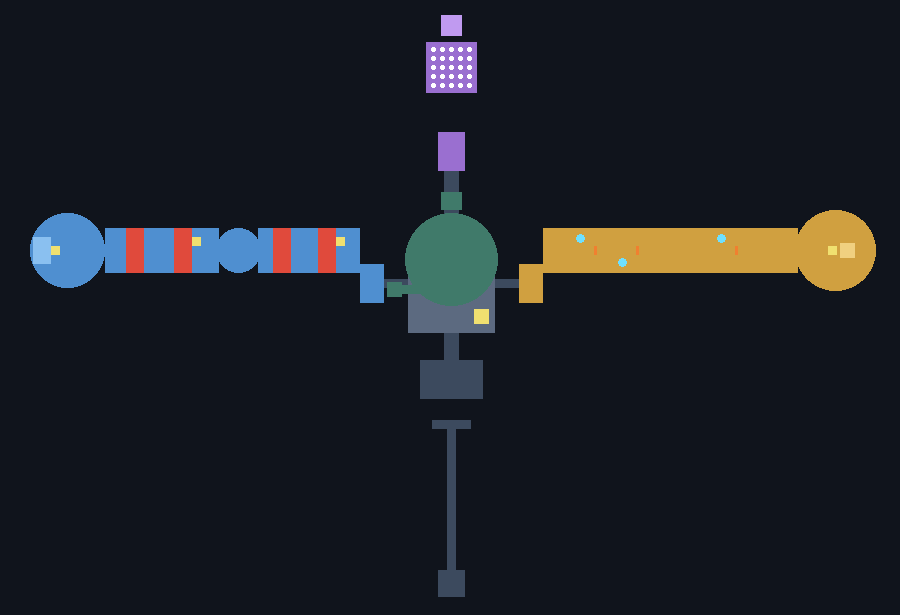
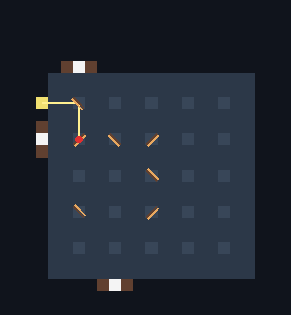
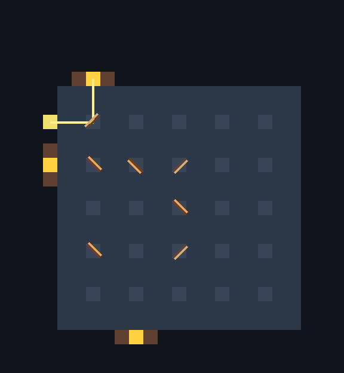
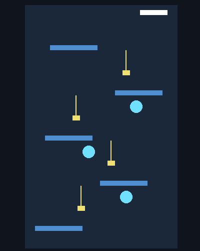
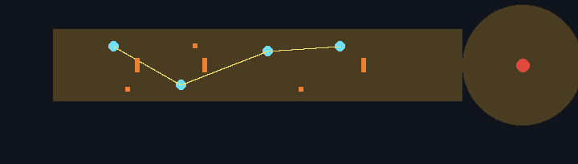
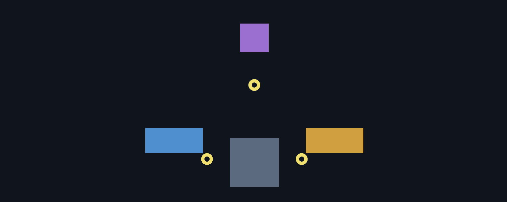

巨神の背を大きく・濃くする
試遊の声: 「巨神の試練は、マルチプレイを想定した大きさではない。それぞれ小さすぎる。もっと巨神の体自体を大きくして、もっともっと内容濃く、広くしてもよい。」 測り方・巨神ごとの案・作り方・作業の順は docs/design/26_backs_scale_up.md。この画面は大きさの見取り図と、決めてもらう 6 つです。まだ作りません。
測ってわかったこと
幅 3・高さ 4通路と戸口の標準。6 人は一列にしか通れない
9 × 31岩鯨の番兵長の広間。6 人のボス戦には幅がない
11%岩鯨の体の足あとのうち、部屋が使っている割合。残りは詰まった石
4〜5.5 倍拡大案での、歩ける部屋の面積の増え方（四体とも）
| 岩鯨 | 潮殻 | 雷翼 | 余燼 |
|---|
| 体（水平 x × z） | 275×437 → 440×699 | 290×273 → 464×437 | 472×285 → 755×456 | 244×412 → 390×659 |
|---|
| 部屋の床の合計 (m²) | 3,900 → 約 21,700 | 8,600 → 約 37,200 | 6,000 → 約 29,200 | 7,000 → 約 35,300 |
|---|
| いちばん広い戦いの部屋 | 390 → 1,029 | 庭 3,652 → 9,514 | 骨の回廊 1,275 → 3,425 | 灰の道 1,625 → 4,305 |
|---|
| 心臓の間 (m²) | 1,134 → 1,963 | 804 → 1,385 | 707 → 1,257 | 804 → 1,385 |
|---|
| 通路の幅 × 高さ | 3×4 → 5〜6 × 6 以上（本道は 7） |
|---|
拡大案は水平 ×1.6（足あとの面積 ×2.6）。今の部屋を位置ごと拡大して面積 ×2.6、広間は ×3.6、心臓の間だけ ×1.3 にとどめる（戦いの手ごたえを保つため）。そこに 21 の初回の拡張と任意の翼を新しい空きへ置く。図は上が北（頭）。配置は概念図。
四体の大きさ比べ
 灰色がいま、橙が拡大案（×1.6）。四つとも同じ縮尺で、中心を合わせて重ねた。
灰色がいま、橙が拡大案（×1.6）。四つとも同じ縮尺で、中心を合わせて重ねた。
6 人が入ったときの部屋
 青い点が 6 人、赤い円が足踏みの予告（半径 3.5）3 つ。いまの広間・番兵長の広間は、6 人と予告で埋まる。
青い点が 6 人、赤い円が足踏みの予告（半径 3.5）3 つ。いまの広間・番兵長の広間は、6 人と予告で埋まる。
岩鯨
 いまの部屋は体の中ほどに固まっている。拡大案は、空いた南半分に鐘楼・第二の広間・詰所・書庫、胸びれに外の道、尾に展望を置く。紫は下の層（闇の水路）。黄は必須の長い道、橙は任意の翼。
いまの部屋は体の中ほどに固まっている。拡大案は、空いた南半分に鐘楼・第二の広間・詰所・書庫、胸びれに外の道、尾に展望を置く。紫は下の層（闇の水路）。黄は必須の長い道、橙は任意の翼。
潮殻
 灰色の枠は封じた予約の間（いまは空）で、拡大案では最初から開けた任意の翼にする。中央の黄の円は息の間（縦に 70 ブロックの大空洞）。
灰色の枠は封じた予約の間（いまは空）で、拡大案では最初から開けた任意の翼にする。中央の黄の円は息の間（縦に 70 ブロックの大空洞）。
雷翼
 骨の回廊の幅を 15 → 25 にして、三層の道が並ぶ。背の上の二つの塔、尾羽の外廊、翼の外の道が任意の翼。
骨の回廊の幅を 15 → 25 にして、三層の道が並ぶ。背の上の二つの塔、尾羽の外廊、翼の外の道が任意の翼。
余燼
 灰の道に二つ目の湖、火守りの谷の奥に火床 II、喉の坂の脇に左右の肺、尾に炉。
灰の道に二つ目の湖、火守りの谷の奥に火床 II、喉の坂の脇に左右の肺、尾に炉。
決めてもらうこと（6 つ）
選ぶと自動で保存されます（db の choices、id は scale_1〜scale_6）。メモは任意です。
読み込み中…
雷翼の背の試練の見直し
試遊の声: 「雷の巨神も試練および建築等も見直してほしいな。鏡？のところもおかしいし」。ユーザーの原則: 「ダンジョン特有のギミックで試練に行ける行けないが出るのは良くない。嵐とかの状態じゃないといけないとかは、自由度が減る。遊び方が変わるとかならいいけど。」 分析と直したことは docs/design/25_storm_back_review.md。この画面は、直したあとも弱い所の作り直し 3 案の見取り図です (上から見た図は北が上、左が西)。案はまだ作りません。
いまの背 (直したあと)
3 か所拍・眠りで「行けない」だった所 (西の岩棚・東の柱・眠る試練) を、いつでも行ける形に直した
9 点眼の間 (鏡の間) のおかしかった所。光が見えない・受け羽が壁に紛れる・止まった理由が出ない、ほか
4 つ見やすさの層: 目的の板・進みの点・成功の知らせ・閉じた戸の理由
残る 3 つ西の繰り返し・東の待つ遊び・拍が遊びを変えていない

上から。青 = 西の骨 (赤い帯が割れた床、黄が昇り風の穴)、橙 = 東の骨 (水色が避雷の柱、橙の縦線が骨の戸)、紫 = 眼の間 (白い点が鏡の台)、中央の緑 = 広間と竜骨の間。

眼の間 配置 0 の最初の向き。黄色い光は窓から入り、2 枚目の鏡の裏で止まる (赤い玉)。以前は、これが何も言わずに起きていた。

同じ配置を解いた形。光る受け羽 (金) が壁の三か所。鏡の橙の線が光を返す面。
割れた床昇り風の穴・光の入口避雷の柱骨の戸光った受け羽鏡の光る面
案 A 骨を縦に (西)
西の骨を、横の筒ではなく縦の肋の登りにする。 昇り風と滑空の輪で梁をつなぎ、頂の岩棚の石へ。降りは滑空で一気に肩の門へ (近道)。
- 直す所
- 同じ筒が 90 ブロック続く単調さ・凪の昇り風が飾りになる・落ちても戻れて緊張が薄い
- 拍の使い方
- 凪は低い昇り風で一段ずつ、嵐は一気に高く (横風で流される)。どちらでも頂へ着く
- 進みの見せ方
- 層ごとに肋の灯りが一つ灯る、目的の板「第二層 輪 3 / 5」
- マルチ
- 先に昇って輪をつくる人 (輪は一度くぐると光り続ける)
- 工数・資源
- 約 6 日・資源なし (輪は粒と判定の箱)
- リスク
- 滑空の操作・縦の空洞の詰み監査 (各層に休み場)

横から (x と高さ)。青い梁が層、黄色い柱が昇り風、水色が滑空の輪、白が頂の岩棚。
案 B 雷の回路 (東)
東は「柱のそばで待つ」をやめ、雷を回路で導く。 避雷の柱を銅の導線でつなぎ、接地のレバーで雷を受ける柱を切り替え、柱から柱へ雷を跳ばして奥の戸へ送る。
- 直す所
- 立って待つだけの遊び・戸と戸のあいだの空き・凪に危険がない
- 拍の使い方
- 凪は雷がゆっくり (読む時間)、嵐は速く放電の線も走る。どちらでも戸は開く
- 進みの見せ方
- 導線に雷が通った所が光り続ける、目的の板「回路 2 / 3」
- マルチ
- 誘い出し役とレバー役。一人でも先にレバーを切り替えて走れば解ける
- 工数・資源
- 約 6 日・導線のブロック (既存の銅の筋の再利用か新規 1)
- リスク
- 回路の読みにくさ (潮殻の栓の謎と同じ型)
推薦: 案 B。残った弱さのうち、いちばん能動性が低いのが東 (立って待つ)。既存の部品 (柱・レバー・招雷) のつなぎ直しで済み、拍を待たない作りにしやすい。

上から。水色の柱を黄色の導線でつなぎ、橙の小さな四角が接地のレバー、縦線が骨の戸、右の赤が雷獣。
案 C 拍の舵 (全体の小改修)
三つの試練の入口に風見の舵を置き、その試練の中だけ拍を凪か嵐に固定できる (60 秒)。 拍を待たずに選べる。どちらでも試練は終えられる。
- 直す所
- 拍が遊びを変えていない・拍を待つ時間
- 工数・資源
- 約 3 日・ブロック 1 の再利用
- リスク
- A・B のような遊びの芯の弱さは直らない。A・B のあとに足す改修向き

上から。三つの試練の入口 (広間の左右と首) の黄色い輪が舵。
比べる
| A 骨を縦に | B 雷の回路 | C 拍の舵 |
|---|
| 直す所 | 西の繰り返し | 東の待つ遊び・空き | 拍が遊びを変えない |
|---|
| 新しい動詞 | 昇る・輪をくぐる | つなぐ・切り替える | 舵を回す |
|---|
| 工数 | 約 6 日 | 約 6 日 | 約 3 日 |
|---|
| 最大のリスク | 縦の詰み監査・滑空 | 回路の読みにくさ | 芯は直らない |
|---|
どれで進めますか
読み込み中…